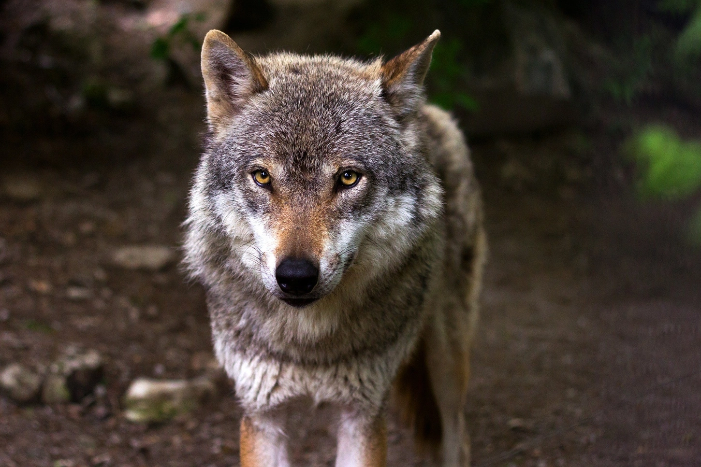

El Lobo Ibérico
El lobo ibérico es una subespecie del lobo gris (canis lupus) endémica de la península ibérica.

Sobre el lobo ibérico
El lobo ibérico es una subespecie del lobo gris (canis lupus) endémica de la península ibérica. Su nombre científico proviene de las manchas oscuras que luce en la parte anterior, la cola y la cruz. Aunque históricamente se distribuía por toda la Península, hoy en día mantiene poblaciones al norte del Duero, encontrándose su población del sur del Duero muy fragmentada.
El lobo es uno de los pocos grandes depredadores que existen en la Península.
Se alimenta de las presas que caza, ya sean grandes herbívoros (jabalíes, corzos o ciervos)
u otros mamíferos más pequeños (ovejas, conejos o ratones). En ocasiones puede competir
por la carroña de animales que hayan muerto de forma natural, así como puede alimentarse
también de restos de vertederos cercanos a poblaciones humanas o frutos silvestres.
Los lobos son animales sociales, viven en manadas formadas por individuos emparentados
y tan solo la pareja dominante se reproduce. Así, controlan la estructura del grupo y
su tamaño. Su época de cría comienza a finales del invierno o principios de primavera
y la gestación dura de 61 a 63 días. El tamaño de las camadas es muy variable, pudiendo
ser de 1 a 11 cachorros, que abren los ojos a los 10 o 15 días y alrededor del mes y
medio comienzan a alimentarse de la carne regurgitada de otros miembros del grupo.
Estado de conservación
Esta especie es clave en el equilibrio de nuestros ecosistemas, pero este papel se ve
gravemente amenazado por la actividad humana. Después de estar al borde de la extinción en
1970, el lobo ibérico se encuentra hoy en día en expansión y abunda al noroeste de la península,
aunque las poblaciones de Sierra Leona no han tenido la misma suerte. A pesar de haber rozado
la extinción, su caza estaba permitida en España hasta este año. Tras la decisión, el pasado
mes de febrero, de elevar la protección del lobo ibérico en España y prohibir su caza en gran
parte de nuestro territorio, en septiembre de 2021 ha sido incluido en el Listado de Especies
en Régimen de Protección Especial, lo que prohíbe su caza en todo el territorio español.
Hasta principios del siglo XX, esta especie poblaba la mayor parte de las tierras del sur
de los Pirineos, pero desde entonces ha sufrido una gran persecución y se han modificado las
condiciones que necesita para desarrollarse. A fecha de hoy, esta subespecie del lobo gris,
endémica de la península ibérica, mantiene sus poblaciones al norte del Duero, encontrándose
sus poblaciones al sur muy fragmentadas.
Las principales poblaciones se encuentran por tanto en Castilla y León, Galicia, Cantabria
y Asturias. También existen poblaciones más reducidas en zonas de montaña de zonas cercanas
como el País Vasco, La Rioja, Guadalajara y al norte de Portugal. En las zonas de montaña del
norte de Andalucía también se encuentran algunas poblaciones, aunque aisladas por la Submeseta sur.
Gracias a los trabajos de protección, en el siglo XXI se han localizado poblaciones más
al sur de lo habitual, en el Sistema Central y el Sistema Ibérico. Tras 60 años sin datos
oficiales de su presencia al norte de Madrid, los primeros cachorros fueron grabados en 2013.
Actualmente, cinco manadas habitan la Sierra de Guadarrama y se espera que si situación continúe
mejorando a raíz de la elevación de su protección.